Integrated Solar Thermal System
This was my capstone project and first job at UBC. The integrated solar thermal system (ISTS) is
composed of solar thermal hydronic system and solar frame actuation system. The solar thermal
hydronic system harnesses solar energy to generate thermal energy. It consists of a solar
collector loop for water heating, a heat pump loop for auxiliary heating and a chiller
loop for water cooling / load simulation. The solar frame actuation system changes the
orientation of the solar thermal collectors to maximize the capture of solar energy. It consists
of rotatable solar frames, an azimuthal actuation system for yaw rotation and an altitudinal
actuation system for pitch rotation. The objective of the project is to complete the
instrumentation and control of the integrated solar thermal system. The solar thermal hydronic
system includes sensors such as fluid temperature sensors, ambient temperature sensors, flow
meters and a solar radiation sensor, and actuators such as a heat pump, water pumps, a chiller,
and three-way valves, and a microcontroller such as Arduino. The solar frame actuation system
includes sensor such as IMU, actuators such as a DC motor and a linear actuator, and a
microcontroller such as Arduino.
Description of Project for Solar Thermal Hydronic System
In this project, I accomplished the following tasks:
Managed the project by a task list, a Gantt chart, weekly reports, and documentations.
Measured the fluid temperature sensor RTD PT1000 using Wheatstone bridge circuit and
instrumentation amplifier circuit.
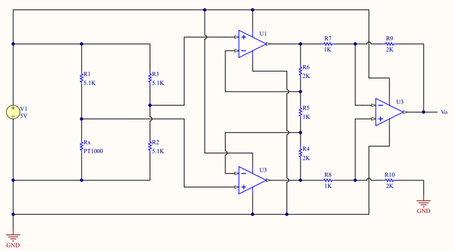
Measured the fluid temperature sensor RTD PT1000 using temperature sensor module Adafruit MAX31865
RTD amplifier and SPI communication protocol. Multiple temperature sensor modules (multiple
independent slaves) were connected to one Arduino microcontroller (one master) through SPI
communication protocol, where the SDI, SDO and SCK pins are shared and each slave is assigned a
unique CS pin.
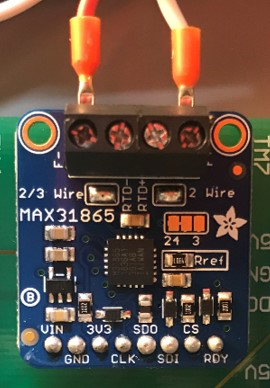

Compared the two different fluid temperature sensing methods (Wheatstone bridge and Temperature
sensor module) with a T-type thermometer by measuring the water temperature at different kettle
setpoints. After comparing the absolute error and mean absolute error, the temperature sensor module
turned to be more accurate.
Measured ambient temperature and humidity using a wired version of DHT22 sensor. It outputs a
digital signal on the data pin which can be read by Arduino.
Measured flow rate from flow meter and validated the measurement by calculating pump head and
finding flow rate from pump curve.
Measured solar radiation sensor with an instrumentation amplifier circuit.
Designed a printed circuit board (PCB) for sensor powering and signal processing using Altium
Designer. All the sensors (14 fluid temperature sensors with SPI communication, 2 ambient
temperature sensors, 3 flowmeters and 1 solar radiation sensor) were connected to the signal
processing board through terminal blocks and the processed data were sent to Arduino through female
pin headers. A microSD module was also soldered to the PCB for data logging backup.
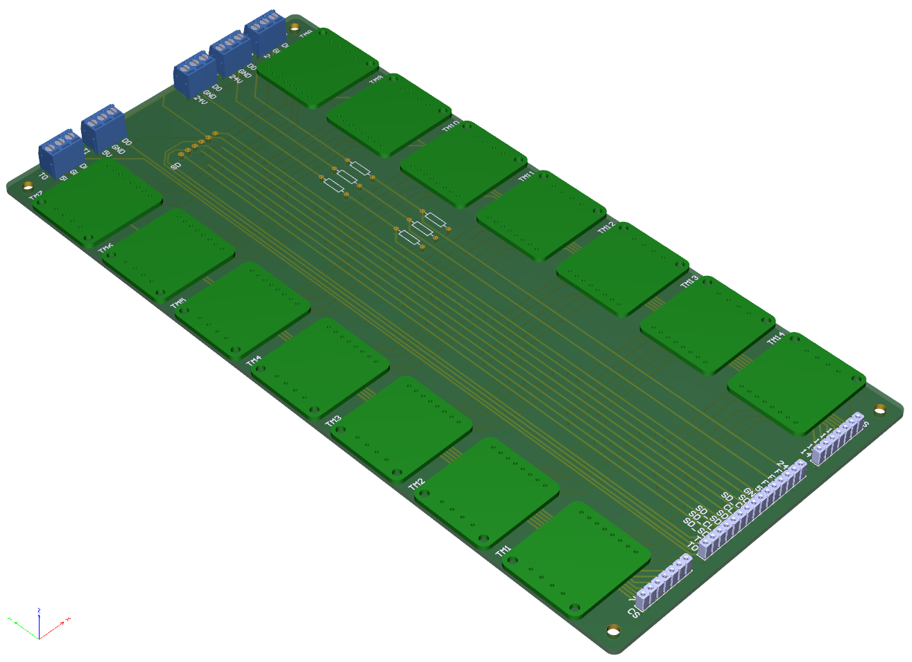
Designed power circuit for actuators such as water pumps, three-way valves, and a chiller. An
Arduino microcontroller and a relay module were used to turn actuators on/off.
Designed electrical control panel layout and harnessed wires and cables.
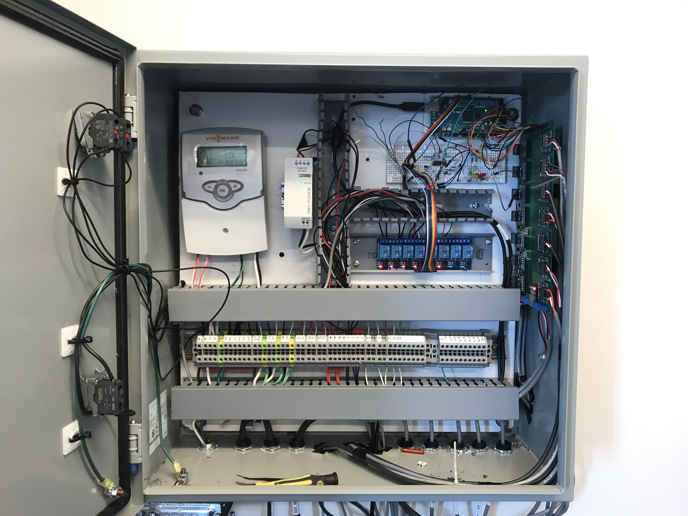
Developed a graphical user interface (GUI) using MATLAB App Designer.
The GUI consists of Connection Panel, Performance Panel, Control Panel and Schematic Panel. The
Connection Panel establishes the connection between Microcontroller and GUI. The Performance Panel
calculates system performance and efficiency. The Control Panel allows user to switch the control
mode and send control signals to actuators. The Schematic Panel displays all the information about
the system including sensor data and actuator state.
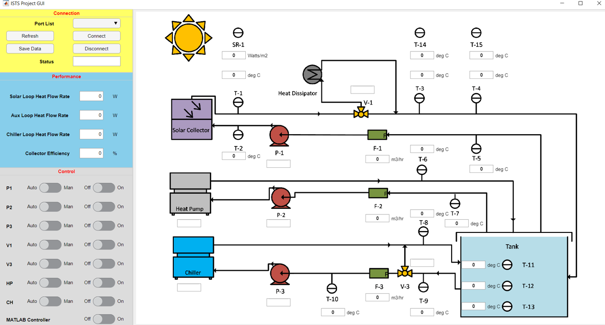
Developed two way communcation between Microcontroller and GUI. Microcontroller acquires physical
data and transmits them to GUI. GUI transmits control signal back to Microcontroller for actuators.
GUI shares information with MATLAB.
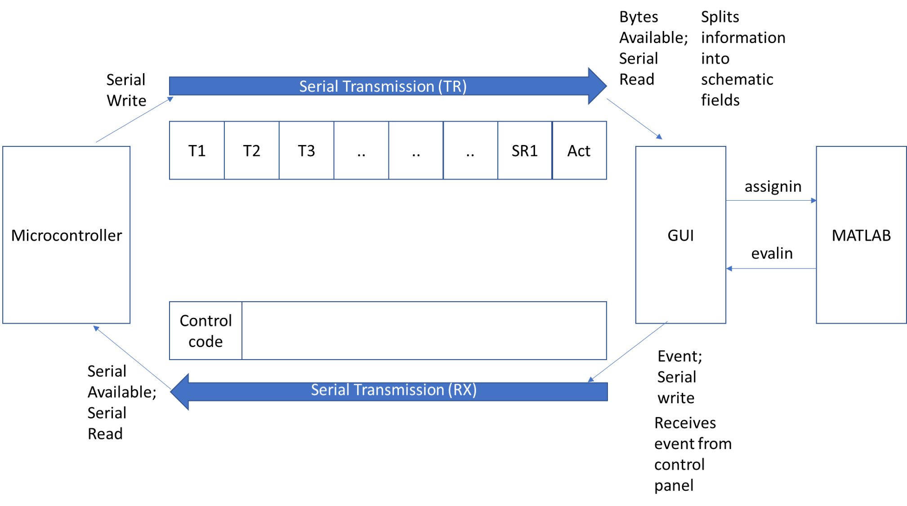
Developed data acquisition and logging system using MATLAB GUI and microSD card.
Developed automatic control logic and state machine in Arduino.
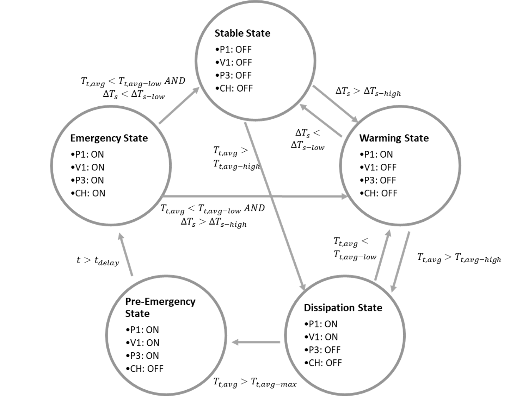
Developed system architecture. The basic ON/OFF controller was implemented in Arduino. It is
possible to override Auto mode using manual controls in GUI. It is also possible to send command
signal from advanced controllers in MATLAB.
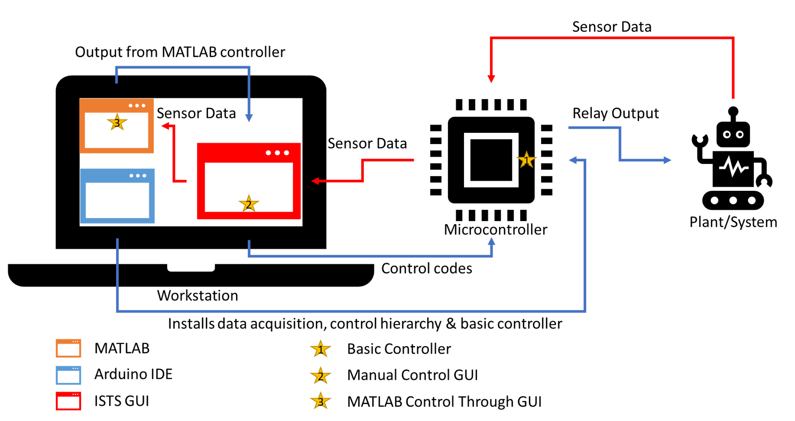
Selected and purchased a new air-to-water heat pump with a variable speed compressor considering
heating capacity, pipe size and power supply.
Description of Work for Solar Frame Actuation System
As a mechatronics engineer, I accomplished the following tasks:
Rebuilt the CAD model for the solar frame actuation system in SolidWorks.
Designed a waterproof enclosure in SolidWorks to protect gears and motors, and prepared drawings
for manufacture and welding.
Used an IMU (Adafruit BNO055) to measure pitch and yaw angles of the solar frame. The IMU was
connected to the power pins and I2C pins on Arduino. The IMU was mounted on a 3D printed part
and enclosed by a waterproof electrical box. The electrical box is then installed on the solar
frame using a water-jetted and bent 6061 Aluminum sheet metal. The cable and gland are also
waterproof.
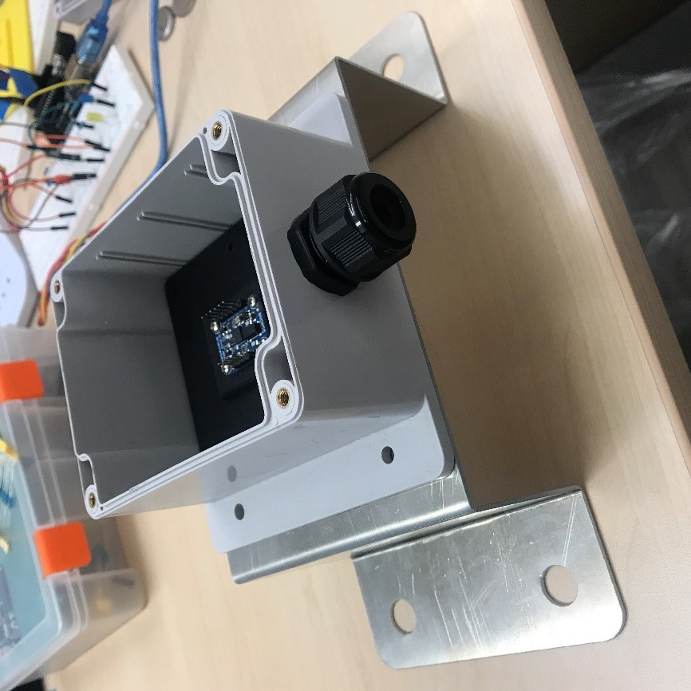
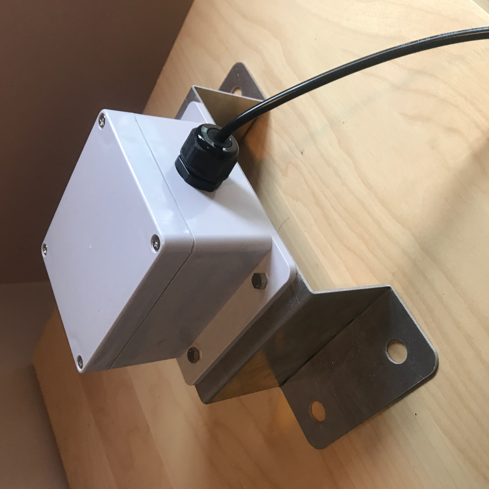
Programmed feedback control code in Arduino with the IMU added to the system to control yaw and
pitch angles of the solar frame. Implemented speed adjustment on actuators depending on the
difference between the angle and the setpoint.
Developed a new GUI for the solar frame actuation system using MATLAB App Designer. Connection panel
establishes the serial communication between Microcontroller and MATLAB. Solar Position Calculation
panel calculates the solar azimuth and altitude angles based on time and location. Azimuthal Motion
panel and Altitudinal Motion panel monitor and control the azimuthal actuation system and
altitudinal actuation system. Monitor panel monitors electrical current in actuators, system status,
and user command.
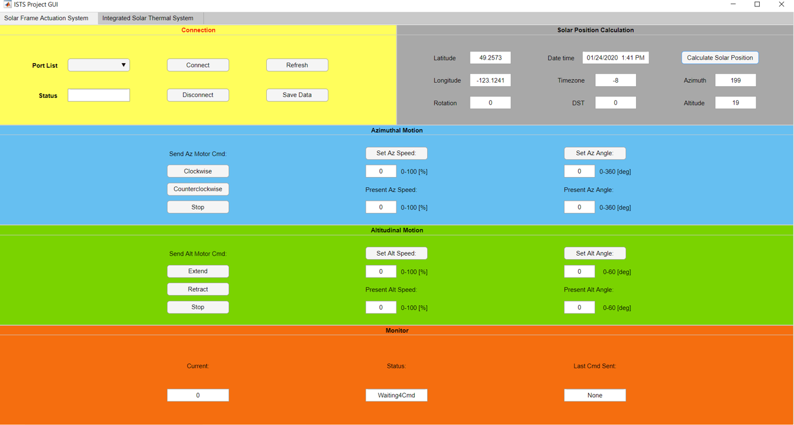
Built a LED circuit to simulate the solar frame actuation system and test Arduino control code and
MATLAB GUI with IMU. Different LED colors simulate different directions and their brightness
simulates speed of actuation.
Tested the updated control code and GUI on the solar frame actuation system.
Tested the DC motor and linear actuator individually. The motor driver used H-Bridge to control the
direction of rotation and used PWM to control the speed of DC motors. A double pole double throw
relay was used switch the motor to be controlled.
Wrote the procedure for installing and uninstalling the solar frame actuation system.
Conclusion
After the development of the instrumentation and control of the integrated solar thermal system, the
solar frame hydronic system was tested by running for 30 hours and the system was observed to behave
as expected. The test verified the sensor conditioning and signal processing board, the data
aquisition and logging system, and the controller and GUI. The success of the test indicated
that the instrumentation and control of the solar frame hydronic system were done properly and the
system could be used for future research and testing of advanced control. The solar frame actuation
system was also tested to be functional. The future development would be the automatic sun tracking
feature. From this project and work, I gathered lots of experience in mechatronics engineering.